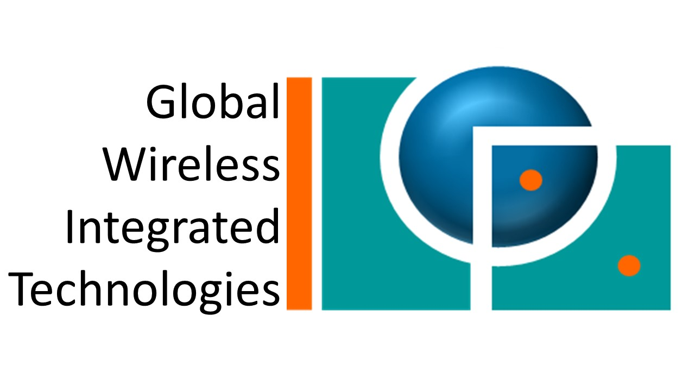

NOS ANALYSES
Benchmarking & QoS
Campagne nationale multi-villes : QoS 5G
Lecture exécutive des signaux QoS/QoE, impacts business et arbitrages prioritaires.
Lire l'analyse
IT & Cyber
Supervision SOC/NOC convergée
Observabilité, automatisation et gouvernance Zero Trust pour infrastructures critiques.
Lire l'analyse
Data & KPI
Data storytelling pour comités de pilotage
Scorecards, heatmaps et alertes pour accélérer les arbitrages CAPEX/OPEX.
Lire l'analyseNOS ARTICLES
Articles visibles : 0
Dernière mise à jour : Février 2026
Benchmarking
05 février 2026
QoS 5G : gouverner une campagne nationale
Retour d'expérience GWIT sur les drive-tests multi-opérateurs, du design de route à la restitution ARTCI-ready.
Ingénierie
22 janvier 2026
Plan directeur 2G->5G : approche méthodologique
Comment nous calibrons couverture, capacité, énergie et backhaul pour soutenir les ambitions de trafic.
IT & Cyber
15 janvier 2026
Architecture SOC pour opérateurs africains
Déployer un centre de supervision convergée couvrant cœur réseau, datacenters et produits digitaux.
Conseil
08 décembre 2025
Coacher les équipes NOC & RNO après un swap
Structurer les bootcamps, transferts de compétences et KPI humains pour accélérer l'adoption.
Impact & RSE
18 novembre 2025
Ingénierie verte : sobriété énergétique appliquée
Réduction des consommations, pilotage hybride énergie et critères RSE intégrés dans nos projets.
Analytics
05 octobre 2025
Data storytelling pour les Comex télécoms
Transformer les points collectés en récits décisionnels : scorecards, heatmaps et alertes intelligentes.
Automation
20 septembre 2025
Automatiser l'exploitation IT des opérateurs
Blueprint GWIT pour industrialiser CI/CD, observabilité et remédiation automatique des plateformes.
Alliances
06 août 2025
Programmes & alliances GWIT au service des territoires
Structurer des partenariats public-privé et accélérateurs d'innovation avec institutions et opérateurs.
Executive brief
Régulations africaines : préparer les KPI QoE de demain
GWIT accompagne les autorités dans la redéfinition des indicateurs clients, la portabilité des données et les obligations de transparence.
- Cartographie des exigences QoS/QoE 2024-2026
- Modèles de gouvernance opérateur régulateur
- Feuille de route CAPEX/OPEX alignée sur les attentes clients
Radar des signaux de marché
Régulation watch
Évolutions sur la transparence tarifaire, qualité perçue et conformité SLA.
Network intelligence
Montée en puissance des audits multi-technos pour piloter les arbitrages CAPEX.
IT & Cyber
Demander un briefing
Convergence SOC/NOC et gouvernance Zero Trust pour opérateurs et entreprises.
Rejoignez le cercle Time To Act
Chaque mois : un insight QoS, une étude ingénierie et un retour d'expérience IT pour les directions télécom & IT.
DONNÉES & CONFIDENTIALITÉ
Nous assurons la confidentialité et la protection des données de nos abonnés. Aucune information n'est partagée avec des tiers.
Conformité, sécurité et respect du consentement sont au cœur de notre relation avec vous.
